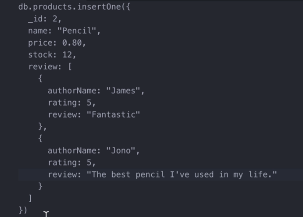

Relationship but without Operators
Unlike SQL, NoSQL have a hard time coping with relationships. There is no magical operator to do this but we can just create an array inside a key then embed a lot of independent documents inside our document, hence, an embedded document.

And that's the way of NoSQL, no love for this guy.
In CLI, the thing looks like this,

We can also do this...

Where productsOrdered is an array containing the id number of our products.